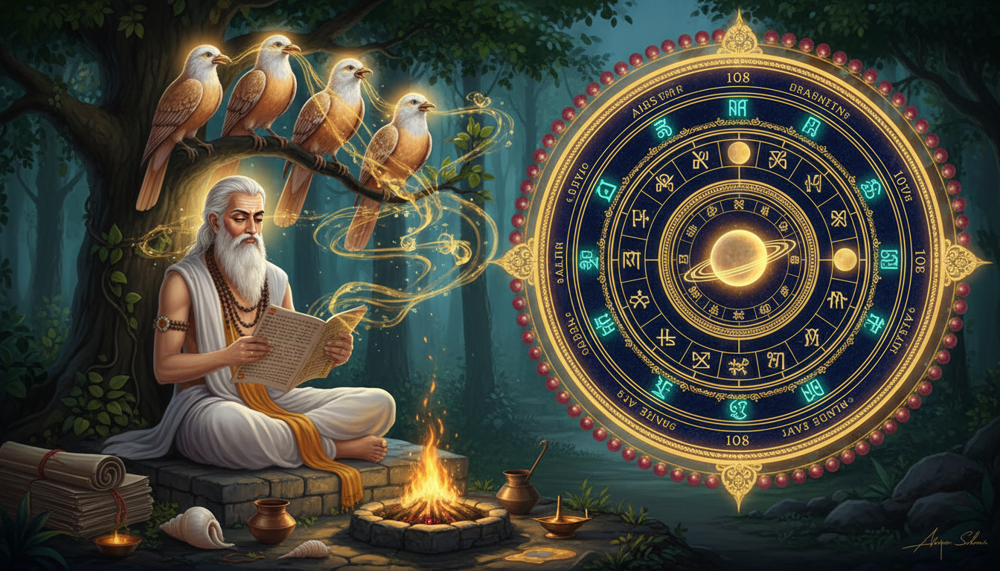

There is a crisis that every tradition of ritual eventually faces, and it usually arrives quietly. People stop believing that the rite works. The fire is lit, the oblation is made, the mantra is counted — and something in the practitioners' posture changes. Then comes the harder question, the one that splits a school in two: if the people doing the rite no longer believe the rite works, does the rite still work? Is the sacrifice a procedure that produces a result, or is it a transaction that depends on the belief of the one performing it?

Jaimini is the rishi who answered that question, in writing, and in the most stubborn possible way. Wikipedia's Jaimini article puts the crisis at the centre of his work: "Jaimini's Mimamsa emerged in a time when traditional Vedic beliefs were losing their persuasive power. It was no longer taken for granted that sacrifices pleased deities, maintained the universe, or that the Vedas were infallible. Buddhist, Jain, and skeptical perspectives questioned the significance of sacrifices, while some adherents continued their practice despite doubts."
He did not answer it by restoring the old confidence. He answered it by building a procedure — a rules engine for reading a Veda and deciding what it commands. The result is the Mīmāṃsā Sūtra, "one of the most important ancient Hindu philosophical texts," the basis of "Mimamsa, the earliest of the six orthodox schools (darshanas) of Indian philosophy."
And then there are two more things about Jaimini that almost nobody knows, and both of them matter enormously to anyone who runs a remedy practice.
The first is an occult one. In the Markandeya Purana, Jaimini needs answers the Mahabharata never gave. His teacher Markandeya has abandoned speech. So Markandeya sends him to four wise birds who witnessed the entire eighteen-day war. The birds answer, and their answers occupy chapters 4 to 45 of a 137-chapter Purana. The story is not decorative. It is the proof-of-knowledge episode of the entire text — and it is the reason the text exists.
The second is an astrological one. The Hora (astrology) article lists, among the branches of Jyotiṣa: "Jaimini Sutras: A non-conventional method of timing of events used by Indian astrologer Acharya Jaimini." This is a different Jaimini from the Mimamsa one, or at least a different facet of the same lineage, and the astrology tradition treats him as a canonical authority — the Wikipedia Nakshatra article's own navigation box lists him under "Rishis/Astrologers" alongside Bhrigu, Parashara, Daivajna, Mantreswara, Nilakantha and Varahamihira.
Here is the shape of what follows. Part one is the ritual code: what Jaimini actually built, how many pieces it had, and the five interpretive tools that make a Vedic command binding. Part two is the chant: the Jaiminiya recension of the Samaveda, the oldest surviving tradition of Vedic chanting, and the two registers of Vedic music — public and forest. Part three is the four birds and the elephant's bell, the most physical occult object in the story. Part four is the Devī Māhātmya hiding inside the same Purana. Part five is the clock: 27 nakshatras × 4 quarters = 108 padas, the same number as the beads on your japa mala, each with a lord and a deity, and the Moon-first rule that governs when you act on any of it.
1. The crisis: sacrifice was being performed by people who no longer believed it worked
Read the framing carefully, because it determines everything that follows. The Wikipedia Jaimini article does not open with a biography. It opens with a failure of nerve:
Jaimini's Mimamsa emerged in a time when traditional Vedic beliefs were losing their persuasive power. It was no longer taken for granted that sacrifices pleased deities, maintained the universe, or that the Vedas were infallible. Buddhist, Jain, and skeptical perspectives questioned the significance of sacrifices, while some adherents continued their practice despite doubts. This challenged the notion of a comprehensive understanding of rituals. In his works, Jaimini sought to address these criticisms.
Three claims had collapsed at once. That sacrifice pleases the deities. That sacrifice maintains the universe. That the Vedas are infallible. And note the fourth sentence: some adherents continued their practice despite doubts. That is the precise human situation. Not unbelief — belief with doubt attached, practised anyway.
This is the situation of almost every remedial ritual you have ever inherited. Someone's grandmother performed the Tuesday remedy because it is Tuesday, and because it was performed for her, and because she did not want to find out what happens if you skip it. The doubt and the practice coexisted. Nobody resolved it.
Jaimini's move was to not resolve it by emotion. He resolved it by procedure. If you cannot make the practitioner believe, you can at least make the meaning of the rite determinate — specify exactly what the text commands, under what conditions, with what exceptions, and what happens when two passages appear to conflict. That is a legal solution to a devotional crisis. It is also, not coincidentally, the founding move of the entire Mimamsa method, and the reason Mimamsa is called Karma-mīmāṃsā — the "investigation of ritual action."
Wikipedia states the doctrine of the school plainly: "His school is considered non-theistic, but emphasizes ritual parts of the Vedas as essential to dharma." Non-theistic but ritual-essenzial. That is a precise and slightly alarming combination, and we will come back to it in section 15, because it is the single most important thing to get right before you build any practice on it.
The working form: Before you change anything in a remedy you inherited, write down the doubt, not the fix. Sit with the practice for one cycle and write, in one sentence, the thing you are not sure about. "I do not know whether this actually affects the planet." "I do not know whether the correct deity is the right one for this dosha." "I do not know whether the timing rule has any basis." Now do not answer the doubt. Just make it precise, and put it where you will see it. Jaimini's entire achievement is that he made the doubt legible instead of leaving it as a private, corrosive feeling under a ritual that kept being performed anyway. Most family practices are already in this state. The first repair is naming it, because an unnamed doubt gets carried silently into every mantra you chant.
2. The machine: three thousand sutras, twelve chapters, sixty padas
The Purva Mimamsa Sutras article gives the dimensions without embellishment:
The work is divided into twelve adhyayas (chapters), which are further divided into sixty padas (sections). The text provides rules for the interpretation of the Vedas and also provides philosophical justifications for the observance of Vedic rituals, by offering meaning and significance of Vedic rituals to attain Moksha.
And the Jaimini article adds the scale: "the text contains about 3,000 sutras and is the foundational text of the Mimamsa school of Hindu philosophy." Dated "around the 4th century BCE."
Now hold the two numbers together — 3,000 sutras compressed into 12 chapters and 60 sections — and you have the shape of the whole method. Three thousand rules about how to read ritual texts, arranged in a structure small enough to be carried in memory and recited aloud as a teaching text. This is not a commentary. It is a manual. It is the world's earliest surviving hermeneutic handbook, and it was built for oral transmission, which is why it is sutra-dense: every sutra is a rule stated once, compactly, with the reasoning stripped to its frame.
The two halves matter. The first half of the Purva Mimamsa Sutras is the rules for interpretation of the Vedas. The second is the philosophical justification for observing the rites, aimed at Moksha. Rules first, justification second. That order is the house style of this entire article, and it is worth asking why: because a practice that begins with justification is a practice that collapses the moment the justification is doubted. A practice that begins with rules survives the doubt. It may even be what finally resolves it.
And the "sixty padas" is not incidental bookkeeping. Sixty sections of ritual rules is the size of a manual for a working priest, not a manual for a library. Sixty sections you can learn in a lifetime of practice. Compare it to what we do today: a remedy tradition that arrives as a scattered oral inheritance, with no section index, no "in this chapter the rules for the X case are here." Jaimini wrote the index.
The working form: Give every remedy you keep a section number. Write down your rules in a fixed order and number them. Rule 1: when is this remedy done. Rule 2: what is offered, in what quantity. Rule 3: to which deity the offering is directed and with what mantra. Rule 4: what must be true of the person's chart for the remedy to apply at all. Rule 5: what invalidates it. Rule 6: how long it runs. Then never add a rule without a number, and never renumber. Jaimini's sixty sections are the model: a numbered rulebook you can hand to someone else and they will run it correctly without you in the room. That is the difference between a lineage and a habit.
3. The five tools: sruti, linga, vakya, pratipatti, and the thing mentioned only in passing
Here is the actual machinery of the Purva Mimamsa Sutras, straight from the Wikipedia article's description of the third chapter: "the word sruti, sense of the passage (linga), context (vakya), and their respective weight when in apparent opposition to one another, the ceremonies called pratipatti-karmdni, things mentioned incidentally (anarabhyadhita) and the duties of the sacrifices are expounded."
Five instruments, and each one solves a specific problem:
Śruti — the heard text itself. The direct command. Highest authority, because it is the Veda.
Liṅga — the indicator. A secondary grammatical or semantic signal that points at meaning the primary text does not spell out. This is the closest thing in the tradition to inference, and it is where most of the craft lives.
Vākya — the sentence, the syntactic context. Which rule actually governs, when a passage could be read two ways.
Pratipatti-karman — the ceremony's own construction. How the rite is physically constituted: what is offered, how many times, with what sequence, by whom. This is the section that matters most for anyone building a remedy, because it is the section that turns a text into an action specification.
Anarabhyādhita — things mentioned incidentally. A rite that is referred to but not commanded. This is the subtle one, and it is where most folk practice has gone wrong. If a rite is only mentioned in passing and never commanded, Mimamsa's rule is that it does not bind you as an obligation. It may be done; it is not required.
The article also describes the fifth chapter: "Fifth chapter discusses relative order of various passages of sruti." And the twelfth: "prasanga, tantra and cumulation of concurrent rites (samuchchaya) is explained." Samuccaya — the cumulation of concurrent rites — is the technical term for the rule about what happens when two observances fall in the same period. That is a scheduling problem, and it is exactly the problem that every transit-remedy practice eventually runs into.
The working form: Sort every instruction you have into five buckets before you obey it. Bucket 1 — śruti: a direct command from a primary text. Bucket 2 — liṅga: a signal pointing at an unstated meaning. Bucket 3 — vākya: context that selects between two readings. Bucket 4 — pratipatti: the physical specification of the rite. Bucket 5 — anarabhyādhita: mentioned in passing, never commanded. Then check: is my current remedy in bucket 1 or bucket 4, or has it quietly drifted into bucket 5? Most inherited practices that "don't work" are bucket 5 instructions that got promoted to bucket 1 by repetition. The Mimamsa discipline says: keep them if you like, but stop calling them obligations and stop expecting them to behave like scripture.
4. Jaimini and Badarayana: the dispute that made both of them
Wikipedia's Jaimini article gives the single most useful line in this entire story for anyone who has to make decisions under uncertainty:
Jaimini's guru was Badarayana, who founded the Vedanta school of Hindu philosophy. He is also credited with authoring the Brahma Sutras. Both Badarayana and Jaimini quoted each other as they analyzed each other's theories. Badarayana emphasises knowledge, while Jaimini emphasises rituals. They sometimes agree with each other, sometimes disagree, and often present antithesis to each other.
Guru and student, quoting each other, in sustained antithesis. Vedanta takes the Brahma Sūtras — and its teacher emphasises knowledge (jñāna). Mimamsa takes the Vedas — and its teacher emphasises ritual (karma). The same teacher, the same tradition, two completely different answers to the question of what actually works.
This matters enormously and it is rarely taught clearly. There is a popular idea that Jyotiṣa, ritual astrology, is the practical arm and Vedanta the philosophical one, and that you can pick whichever you like. The Wikipedia article is blunter: the two founders were in open theoretical opposition. They "sometimes agree with each other, sometimes disagree, and often present antithesis to each other."
Read that as a practitioner and the question becomes practical rather than academic. What is the remedy actually doing — changing the person, or changing the world? Badarayana's side says the practice is for jñāna, understanding, and the understanding is the release. Jaimini's side says the rite does something, and that its specification is the whole point. If you run a remedy practice, you have already implicitly chosen Jaimini's side. That is fine. But choose it consciously, because a great many people inherit a Vedantic expectation (the rite works because the mind has changed) together with a Mimamsa technique (the rite works because the specification is exact), and that hybrid produces persistent, confusing, low-grade disappointment.
The commentary tradition also confirms how consequential this was. The Wikipedia Jaimini article: "The most studied bhashya (reviews and commentaries) on Jaimini's texts were written by scholars named Shabara, Kumarila, and Prabhakara." The Purva Mimamsa Sutras article adds the sectarian spread: "The major commentaries written on the text, including the Śabara Bhāṣya, were by Kumarila Bhatta and Prabhakara Mishra. The Dvaita philosopher Raghavendra Tirtha also wrote a full commentary on the Mimamsa Sutras titled 'Bhatta Sangraha'. Ramanuja, Bhāskara (Bhedabheda Vedanta), Madhvacharya and Vallabha considered Pūrvamīmāṃsā and Uttaramīmāṃsā (Vedanta) as ekaśastra i.e. one undivided teaching."
That last clause is the point: every major philosophical school in Hinduism — Dvaita, Bhedabheda, Advaita — felt obliged to write a full commentary on Jaimini's manual. You do not write a full commentary on a manual you consider mistaken. You write one on a manual you consider authoritative and worth contesting.
The working form: State, in one line, what your remedy is supposed to change. Write: "This rite is expected to alter the person's circumstances" — or — "This rite is expected to alter the person who performs it" — or, if you are honest, "I do not know, and I do both." Then check that your technique matches your expectation. If you have built a meticulous offering (Jaimini's side) but you evaluate its success by whether you "feel better" (Badarayana's side), you will never learn whether the offering works, because your measurement instrument is measuring a different thing. Change one side, not both. If you want to test the offering, measure the circumstance — the arrival of the job, the resolution of the conflict, the change in the transit — on a fixed date, in writing, before you start.
5. Śabara's rule: if you cannot verify it, you cannot claim it
Wikipedia's Purva Mimamsa Sutras article singles out one commentary above all:
Over the centuries many commentaries have been written on this text, with the most important being the Śabara Bhāṣya written by Śabara, which is the only extant commentary on all 12 chapters of the Mimamsa Sutras of Jaimini.
Not the most famous. The only one that survives complete — all twelve chapters. Everything else is fragmentary, partial, or excerpted. That is a strange thing for the founding commentary of the school to be, and it tells you something about how the tradition treated it: Śabara's is the baseline text you check other texts against.
The three great later commentators — Śabara, Kumārila Bhaṭṭa, Prabhākara — represent successive attempts to say what the rites actually are and what they actually accomplish. Kumārila's position is famously fierce: he is remembered as the defender of Mimamsa against the Buddhist epistemological challenge, and the Wikipedia Purva Mimamsa Sutras article cites the standard scholarship, Taber and Kumārila Bhaṭṭa's A Hindu Critique of Buddhist Epistemology: Kumārila on Perception, noting it treats "the 'Determination of perception' chapter of Kumārila Bhaṭṭa's Ślokavārttika." Prabhākara's position is the opposite: he folds Mimamsa into a theistic Advaita in which the Brahman is the agent who acts in the sacrifice.
That is a full range: Śabara as the careful baseline; Kumārila as the defender of ritual's independent efficacy against a rival school; Prabhākara as the absorber who grants the Brahman the agency. Three positions on the same question — who is acting when this rite is performed? — and the tradition kept all three alive for a thousand years.
Now the honest part. The Jaimini article states that Mimamsa "is considered non-theistic." Prabhākara's theistic revision was not an optional garnish; it was a response to a real gap. And the Jaimini article quotes Clooney's framing directly: Clooney asks "What is a god? The quest for the right understanding of devatā in Brāhmañical ritual theory (Mīmāṃsā)," and Bilimoria's contribution is described as "Hindu doubts about God: Towards Mimamsa Deconstruction."
Which means: the founding school of ritual science in Hinduism was built by people who were arguing about whether there is a recipient of the offering. That is a much more useful thing to know than a sanitised version, because it tells you what a remedy ritual is actually doing when you perform it. You are not necessarily informing a deity. You may be executing a procedure whose efficacy lies in its exactness — or you may be addressing a power — and the tradition genuinely did not settle it, and the honest practitioner keeps both readings live.
The working form: Write your own one-paragraph theology of the rite, and keep it honest. Something like: "When I offer to X, I understand this as an act of address to X, whose response I cannot verify, and I understand the exactness of the act as the part I am responsible for." Hold both clauses. The first gives the rite its dignity; the second gives it its discipline. What destroys a practice is dropping the first clause and quietly replacing it with the second — and then resenting that the offering did not behave like a transaction. Or dropping the second and improvising the specification every week.
6. The Jaiminiya: the oldest surviving Vedic chant tradition, still being sung
Now the first of the two hidden halves. Wikipedia's Samaveda article records the fact like a footnote, and it is not a footnote:
There were about a dozen styles of Samavedic chanting. Of the three surviving versions, the Jaiminiya preserves the oldest surviving tradition of Samavedic chanting.
Three recensions survive. The Kauthuma, "current in Gujarat, Uttar Pradesh, Odisha, West Bengal, and for a few decades in Darbhanga, Bihar." The Rāṇāyanīya, "in the Maharashtra, Karnataka, Gokarna, a few parts of Odisha, Andhra Pradesh." And the Jaiminiya, "in Karnataka, Tamil Nadu and Kerala." The Jaiminiya is the one that preserves the oldest surviving tradition of Samavedic chanting.
So: the rishi who codified how to read a Veda also carries, under his own name, a sākhā — a school of chanting — that is the closest thing we have to hearing the oldest Vedic melodic practice still in use. Jaimini is on both sides of the same wall: he is the man who systematised the rule of the chant and the man whose branch still sings it.
And the chant itself is extraordinary. The Samaveda article: "The Samaveda or Sama-Veda (Sanskrit: सामवेद, IAST: Sāmaveda, from सामन्, 'song' and वेद, 'knowledge'), is the Veda of melodies and chants." It "consists of 1,875 verses. All but 75 verses have been taken from the Rigveda." It is, in Frits Staal's famous phrase, "the Rigveda set to music." And this:
The Samaveda text contains notated melodies, and these are probably the world's oldest surviving ones. The musical notation is written usually immediately above, sometimes within, the line of Samaveda text, either in a syllabic or a numerical form depending on the Samavedic Sakha (school).
The world's oldest surviving notated melodies — and the notation system itself differs by school. The Jaiminiya writes its notation one way; the Kauthuma writes it another. That is not a trivial detail. It means the pitch contour of a Rigveda hymn was transmitted through Jaimini's lineage in a specific graphic convention, and that convention is still legible in manuscripts from Karnataka, Tamil Nadu and Kerala.
The working form: Learn the notation, not just the mantra. Take one hymn you already recite and find out how its syllables are actually written as pitch in the Samaveda notation of your school — the Jaiminiya form if your practice descends from it. Read the line above the text, not the line of text. The distinction between chanting a string of sounds and singing a notated contour is the difference between a mantra you have memorised and a mantra you have inherited. Then sing it at least once a month in its notated form, even if only for two minutes. You are not doing this for the deity's benefit. You are doing it so that the chant stays a chant and does not decay into speech.
7. Gramageya and Aranyageya: the two registers, and which one you are in
Here is a piece of the Samaveda's internal architecture that almost nobody outside the discipline knows, and it is directly relevant to how a remedy practice should be built:
The Sāmaveda comprises two major parts. The first part includes four melody collections and the second part three verse "books." A melody in the song books corresponds to a verse in the arcika books. The Gana collection is subdivided into Gramageya and Aranyageya, while the Arcika portion is subdivided into Purvarcika and Uttararcika portions. The Purvarcika portion of the text has 585 single stanza verses and is organized in order of deities, while the Uttararcika text is ordered by rituals. The Gramageya melodies are those for public recitations, while Aranyageya melodies are for personal meditative use such as in the solitude of a forest. Typically, stanzas from the Purvarcika collection were sung to melodies described in the Gramageya-Gānas index, and the rules of how the verses mapped to verses is described in the Sanskrit texts such as the Puspasutra.
Two organizing principles running in parallel across the text, and they are the same two principles the Purva Mimamsa Sutras runs on.
Deity-order (Purvarcika, 585 single-stanza verses, organised by which god the hymn addresses) corresponds to public (Gramageya). Ritual-order (Uttararcika, ordered by which rite the hymn is used in) corresponds to private (Aranyageya). Public recitations are arranged by who you are calling. Private meditative chant is arranged by what you are doing.
Look at that again, because it is a genuine design principle for remedy work. Your public practice — the puja with the family, the Tuesday lamp, the group recitation — is organised by deity: you are calling a named power for a named reason. Your private practice — the silent, individual, corrective work — is organised by rite: it is a specific procedure attached to a specific situation, not an appeal to anybody.
Most people do the reverse, and it is why private remedy work feels vague and public puja feels thin. People sit alone and "think about Jupiter," and they gather a group and recite "Om Brihaspataye Namaha" without knowing which rite the hymn belongs to.
And note the mechanism of the mapping itself: "the rules of how the verses mapped to verses is described in the Sanskrit texts such as the Puspasutra." There is a technical manual for the mapping. The tradition did not leave the melody-to-verse assignment to memory or to inspiration. It wrote it down in a Pushpa-sūtra — a "flower sutra," a rulebook for the flower-like ornamentation of the chant. Ornament, specified.
The working form: Split your practice into a deity-organised public half and a rite-organised private half. Public: pick the graha you are working with, use its nakshatra deity, its mantra, its colour, its day — and make the sequence identical every time, because a public rite that varies is a public rite with no specification. Private: instead of "sitting with Jupiter," take the specific rite that corresponds to your actual situation — the specific transit, the specific dosha, the specific obstacle — and perform it exactly, in the same place, at the same time, with the same offering. Do not improvise a private rite on a bad day. The Aranyageya rule is that the personal chant follows a fixed procedure; the improvisation belongs to neither register.
8. The four birds: how the Mahabharata's missing answers were recovered
Now the second hidden half, and the reason Jaimini is worth a full article even if you have no interest in ritual philosophy.
Wikipedia's Markandeya Purana article sets it out:
This Purana has 137 chapters, of which chapters 81 through 93 is the Devi Mahatmya. The text opens with the Mimamsa founder Jaimini asking sage Markandeya for answers to some questions raised by the Mahabharata, but never addressed in it. Markandeya asserts that he needs to go and perform some Vedic rituals, and suggests Jaimini to meet up with four wise birds who live in the Vindhya range. Jaimini meets the birds. The birds answer his questions, which constitute chapters 4 to 45 of the Markandeya Purana.
And the Jaimini article gives the fuller, more dramatic version:
In later narratives, Jaimini is described as a disciple of Vyasa, the author of the Mahabharata, who seeks clarification on the Mahabharata. Since Vyasa was not around to clear his confusions, he went to Markandeya. However, by the time he went to him, Markandeya had abandoned speech. The disciples of Markandeya directed Jaimini to four birds who had witnessed the entire eighteen-day Mahabharata war. The mother of those four birds was flying above the battlefield when she was pierced by an arrow which ripped open her womb. Four eggs fell out and safely landed onto the Kurukshetra ground, which had been softened by it being blood-soaked. An elephant's bell fell over the four birds and covered them protectively keeping the eggs safe throughout the remainder of the war. After the war, they were discovered by rishis who realized that the four birds had heard much during the war and had knowledge of human speech. Jaimini went to those four birds and was able to clear his doubts and confusions.
Every element of this is doing work.
The bird is wounded but the eggs survive. The mother is pierced by an arrow above the battlefield; her body opens; the eggs fall. The ground is "softened by it being blood-soaked" — the war's own violence becomes the soft landing. The eggs are not saved by a miracle. They are saved by the ground the war made.
The bell is the protector. "An elephant's bell fell over the four birds and covered them protectively keeping the eggs safe throughout the remainder of the war." A war elephant's bell — a piece of military equipment, dropped or discarded — becomes a bell-shaped cover over four eggs for the rest of the conflict. That is a genuinely strange image and it is not symbolic in the obvious way. The bell is from the war. The thing that protects the witnesses is a casualty of the thing they witnessed.
The knowledge is acquired, not taught. The rishis "realized that the four birds had heard much during the war and had knowledge of human speech." They did not instruct the birds. The birds had heard. Their qualification is reception. Jaimini "went to those four birds and was able to clear his doubts and confusions" — he did not convert them or persuade them. He asked, and they answered.
And the answers are the bulk of the book. Chapters 4 to 45 of a 137-chapter text. The four birds are not a cameo. They are the method of the text.
Also note the detail in the Markandeya Purana article: Markandeya "asserts that he needs to go and perform some Vedic rituals" — he refuses the question on the grounds that he has work to do. The teacher declines not from incapacity but from priority. And the four birds "live in the Vindhya range" — the Vindhyas are the central Indian range associated with the tapas of the tapas-bearing rishis, with the ashramas. The oracle is located in a place of concentrated ascetic practice, not in a temple, not in a court.
The working form: Find the one question your inherited practice cannot answer, and go to the witness rather than to the theory. Write down the single question your remedy system cannot resolve — usually something like "Which of my two conflicting instructions wins when both fall in the same period?" Then identify the witness: the person who actually did the thing, the recording, the ledger, the old practitioner, the family member. Do not resolve it by reading more commentary. Resolve it by asking the one who was there, and record the answer in their words, with the date and the specifics of what they observed. Jaimini's four birds are the model: the answer to a question about the war came from those who heard the war, not from those who wrote about it. And write down the answer with the same care you would write a rule, because it will become Rule 7.
9. The elephant's bell: the most physical occult object in the story
Stand with the bell for a moment, because it is the object that will actually change how you build a remedy practice.
Everything else in this story is immaterial: a teacher's lapse into silence, a rishi's questions, the transmission of scripture from birds. The bell is stuff. It is a heavy iron or bronze object from a war elephant's neck — the kind of thing that has a specific weight, a specific clapper, a specific sound when it moves. It fell, and it covered four eggs.
Look at what the bell does functionally, stripped of all metaphor. It creates a dome. An inverted metal shell over a clutch of eggs, sheltering them from impact and from the trampling of war elephants for the remainder of the conflict. It is improvised. It is not designed for the purpose. It is the wrong object doing exactly the right job, and it does the job not because it is a ritual implement but because it is shaped like a cover.
That is the whole of protective ritual technique in one image, and it is why protective rites in every tradition use domes, vessels, canopies, umbrellas, conches, and inverted pots. The logic is not "this object is holy." The logic is "this object has the right shape for the job." The bell's sacredness is not that it was blessed for the purpose; it is that a war elephant was wearing it over its neck at the moment the eggs needed shielding.
And the eggs were protected by their own situation: they had fallen onto ground the war had already made soft. The dome came from the war; the softness came from the war. Two things that were produced by the very event that endangered the eggs.
This is a very different mental model from the one most remedy practices carry, where you select a specific item for a specific deity and the selection is the whole of the efficacy. Here the operative elements are: a real object with a specific shape, and a ground that has been prepared by whatever was difficult before it.
The working form: Build your protective rite out of a real object and a prepared ground — and stop looking for a blessed one. For a protection rite: take an ordinary vessel, pot, bell, lid, or conch that has a genuine physical shape that can hold or cover something, and use it for the thing it can physically hold. Then prepare the ground: the specific place, the specific habit, the specific prior difficulty that the difficulty has already softened. Clean the site. Burn at it. Sit in it first. Do not go looking for an antique or a temple-distributed item; the object's job in this story is to be the right shape, and it was scavenged from a battlefield. What matters is that the thing is genuinely there, genuinely the right shape, and used the same way each time.
10. The 137-chapter Purana with the Devi Mahatmya folded inside it
The Markandeya Purana is a strange container, and the strangeness is the point. From Wikipedia:
The Markandeya Purana is probably one of the oldest in Purana genre of Hindu Literature, among the most interesting and important, states Ludo Rocher. It is famous for including the Devi Mahatmya within it, the oldest known treatise on Devi (Goddess) as the Supreme Truth and Creator of the Universe. The text is considered as a central text of the Hindu Goddess-related Shaktism tradition, with an extraordinary expression of reverence for the feminine. The Markandeya Purana's Devi Mahatmya is often ranked in some Hindu traditions to be as important as the Bhagavad Gita.
The extant manuscripts of this Purana have 137 chapters, of which chapters 81 through 93 is the Devi Mahatmya. Tradition and some medieval era texts assert that the Markandeya Purana has 9,000 verses, but surviving Manuscripts have about 6,900 verses. 2,100 verses were transferred to Devi Bhagavatam.
The arithmetic is worth doing, because it explains the book's structure. 6,900 surviving verses, of which 2,100 were transferred out to the Devī Bhāgavata — leaving roughly 4,800. Chapters 4 to 45 are the birds' answers. Chapters 81 to 93 are the Devī Māhātmya. And the Devī Māhātmya alone "is often ranked in some Hindu traditions to be as important as the Bhagavad Gita."
So the same book contains, in the same manuscript lineage, a proof-of-knowledge frame (the birds), a philosophical system (chapters 4-45 on karma, samsara, dharma, shraddha), a yoga instruction (chapters 39-43), and the central text of Goddess-worship. That is not a miscellaneous compilation. It is a book with a function.
Look at the yoga placement, which is precise:
The text presents its Yoga philosophy in chapters 39 to 43, and asserts that it is the path to gain self-knowledge and liberation (Moksha), thereby overcoming past Karma.
And its character, per Rigopoulos: "The Yoga discussions, Dattatreya's portrayal and his yoga-teachings within the Markandeya Purana, states Rigopoulos, are essentially those of Jnana yoga, and this emphasis on Jnana within a nondual (Advaita Vedanta) framework characterizes Dattatreya throughout the text."
Jñāna yoga — yoga of knowledge. Not karma yoga, not bhakti yoga. Within an Advaita frame. And the earlier chapters had already done the śruti work, establishing the rules; the yoga arrives at 39-43, after the epistemic foundation is in place. Order again: rules first, method second.
The chronology is honestly stated by the article, and it is a warning:
Like all the Puranas, the Markandeya Purana, has a complicated chronology. Dimmitt and van Buitenen state that each of the Puranas is encyclopedic in style, and it is difficult to ascertain when, where, why and by whom these were written: As they exist today, the Puranas are a stratified literature. Each titled work consists of material that has grown by numerous accretions in successive historical eras. Thus no Puranas has a single date of composition. (...) It is as if they were libraries to which new volumes have been continuously added, not necessarily at the end of the shelf, but randomly.
And a further honest note: "the Markandeya text is one of the Puranas that lacks a sectarian presentation of ideas in favor of any particular god, and it is rare to read any deity being invoked or deity prayers in the entire text." Yet it contains the Devī Māhātmya, the most goddess-centred text in the tradition. That tension is real and it is worth sitting with rather than smoothing over.
One more practical detail from the Devī Māhātmya article worth knowing, because it tells you how the text was used: "This text is studied on its own, and sometimes titled as Saptasati or Chandi-mahatmya or Chandipatha. It is particularly popular in eastern states of India, such as West Bengal and Odisha." The Chandipatha — the path of recitation — is what it is called when it circulates as a standalone recited scripture. It was a recited path, not just a read one.
The working form: Read the tradition's texts in the order they were designed to be used, and recite the ones that were made for recitation. If your practice draws on the Goddess-tradition material, the Devī Māhātmya was not written to be studied abstractly — it circulated as Chandipatha, a path of recitation, in Bengal and Odisha. Read the chapters that set the epistemic frame before you read the chapters that give the practice. And keep a copy that you read separate from the copy you recite: the text you understand and the text you recite are doing different jobs, and in the Markandeya Purana they sit 40 chapters apart.
11. The clock: 27 nakshatras × 4 quarters = 108 padas, and 108 beads on the mala
Here is where the article turns from philosophy to your actual practice, and where Jaimini's other identity becomes useful.
The Wikipedia Nakshatra article:
Each of the 27 nakshatras covers 13° 20' of the ecliptic. Each nakshatra is also divided into quarters or padas of 3° 20', and the table below lists the syllables traditionally used as the first sound of the name given to a child born under each pada. The 27 nakshatras, each with 4 padas, gives 108. 108 is also the number of beads in a japa mala, representing all the elements (ansh) of Vishnu.
108. The same number. 27 nakshatras × 4 padas = 108, and a japa mala has 108 beads. The article says the 108 represents "all the elements (aṃś) of Vishnu." So the pada system and the mala are the same count, and the tradition reads that as meaningful: the full clock of the sky is the same size as the full rosary of recitation.
That is a genuinely beautiful structural fact and it is also functionally decisive. It means: one full turn of the japa mala covers every pada of the zodiac exactly once, if you walk the padas in order. 108 beads, 108 padas. If you assign one bead to one pada and walk them in zodiacal order, your recitation is a traversal of the sky.
And the quarter is the right unit for remedy work, because the quarter is small enough to be a moment. A whole nakshatra is 13°20' of the Moon's travel — more than a day. A pada is 3°20' — roughly two hours of lunar motion. A remedy keyed to a pada is a remedy keyed to a specific window in a specific night, and a transit reading that says "the Moon is in the third pada of Ashlesha" is telling you something actionable: it is a position within a position.
The article also explains where the 27 came from, and it is a story about measurement error that is worth knowing:
During the Bronze Age (around 2000 BCE), astronomers used a calendar of 360 days, where the sun moved 1 degree per day and the moon moved an average of 13 degrees per day. Dividing the 360-degree sky by the Moon's 13 degree daily path gives an orbital period of 27.69 days. The astronomers rounded it to 28 nakshatras. Later, when a 365 day solar calendar was adopted, the Moon's updated daily speed of 13.2 degrees resulted in a shorter orbit of 27.27 days. Astronomers then rounded this down to 27 nakshatras and dropped the star Abhijit.
And the reason the count was allowed to change at all, which is the fascinating part:
These were grouped into four equal quarters which would have been fundamentally disrupted if it had been decided to reduce the number of divisions to 27.
So the pada structure — the four-quarter division — was the load-bearing element. The number of nakshatras could change; the quarters could not. The Chinese "retained all of their original 28 lunar mansions," and Wikipedia notes the consequence: the four-equal-quarters system would have been "fundamentally disrupted" by a move to 27. The quarters were primary. The nakshatra count was a parameter that could be adjusted to keep the quarters clean.
The working form: Make your japa count the sky. Take a 108-bead mala. Assign the 27 nakshatras to the 27 rounds of a 108-bead cycle, so that one full mala = one full zodiac. Recite the nakshatra's assigned mantra or the graha's mantra as you pass through it, and mark each pada as you go — one bead per pada, four beads per nakshatra. You have now turned a devotional count into a scanned traversal of the lunar zodiac, in the traditional order, at whatever speed you can hold. Do it on the day and night of a planet's transit that you are actually working on, and you will find — because the padas are where the Moon actually is — that the count starts landing on the same padas night after night as the Moon's own cycle repeats. That is the clock, being used as a clock.
12. The pada table: every quarter has a lord and a deity, and both are remedies
The full 108-pada table is in the Wikipedia Nakshatra article, with three columns that matter: the four birth-syllables, the Vimshottari Lord, and the Ruling Deity. This is the operative table for anything you do with transits. A selection, with all three columns:
| Nakshatra | Pada 1 | Pada 2 | Pada 3 | Pada 4 | Vimshottari Lord | Ruling Deity |
|---|---|---|---|---|---|---|
| Aśvini (अश्विनी) | चु Chu | चे Che | चो Cho | ला La | Ketu | Aswini Kumara |
| Bharaṇī (भरणी) | ली Li | लू Lu | ले Le | लो Lo | Venus | Yama |
| Kṛttikā (कृत्तिका) | अ A | ई I | उ U | ए E | Sun | Agni |
| Rohiṇī (रोहिणी) | ओ O | वा Va/Ba | वी Vi/Bi | वु Vu/Bu | Moon | Brahma |
| Mṛgaśīrṣā (मृगशीर्षा) | वे Ve/Be | वो Vo/Bo | का Ka | की Ke | Mars | Moon |
| Ārdrā (आर्द्रा) | कु Ku | घ Gha | ङ Ng/Na | छ Chha | Rahu | Shiva |
| Punarvasu (पुनर्वसु) | के Ke | को Ko | हा Ha | ही Hi | Jupiter | Aditi |
| Puṣya (पुष्य) | हु Hu | हे He | हो Ho | ड Da | Saturn | Brihaspati |
| Āśleṣā (आश्लेषा) | डी Di | डू Du | डे De | डो Do | Mercury | Rahu |
| Maghā (मघा) | मा Ma | मी Mi | मू Mu | मे Me | Ketu | Pitr |
| Pūrva Phalgunī (पूर्व फाल्गुनी) | नो No | टा Ta | टी Ti | टू Tu | Venus | Bhaga |
| Uttara Phalgunī (उत्तर फाल्गुनी) | टे Te | टो To | पा Pa | पी Pi | Sun | Sun |
| Hasta (हस्त) | पू Pu | ष Sha | ण Na | ठ Tha | Moon | Savitr |
| Citrā (चित्रा) | पे Pe | पो Po | रा Ra | री Ri | Mars | Vishwakarma |
| Svāti (स्वाति) | रू Ru | रे Re | रो Ro | ता Ta | Rahu | Vayu |
| Viśākhā (विशाखा) | ती Ti | तू Tu | ते Te | तो To | Jupiter | Indra Agni |
| Anurādhā (अनुराधा) | ना Na | नी Ni | नू Nu | ने Ne | Saturn | Mitra |
| Jyeṣṭhā (ज्येष्ठा) | नो No | या Ya | यी Yi | यू Yu | Mercury | Indra |
| Mūla (मूल) | ये Ye | यो Yo | भा Bha | भी Bhi | Ketu | Varuna, Nirriti |
| Pūrva Aṣāḍhā (पूर्वाषाढ़ा) | भू Bhu | धा Dha | फा Bha/Pha | ढा Dha | Venus | Apah |
| Uttara Aṣāḍhā (उत्तराषाढ़ा) | भे Bhe | भो Bho | जा Ja | जी Ji | Sun | Visvedevas |
| Śrāvaṇa (श्रवण) | खी Ju/Khi | खू Je/Khu | खे Jo/Khe | खो Gha/Kho | Moon | Vishnu |
| Śrāviṣṭhā (श्रविष्ठा) | गा Ga | गी Gi | गु Gu | गे Ge | Mars | Vasus |
| Śatabhiṣā (शतभिषा) | गो Go | सा Sa | सी Si | सू Su | Rahu | Varuna |
| Pūrva Bhādrapadā (पूर्वभाद्रपदा) | से Se | सो So | दा Da | दी Di | Jupiter | Aja Ek Pada |
| Uttara Bhādrapadā (उत्तरभाद्रपदा) | दू Du | थ Tha | झ Jha | त्र Da/Tra | Saturn | Ahirbudhnya |
| Revati (रेवती) | दे De | दो Do | च Cha | ची Chi | Mercury | Pooshan |
Now read the table as a remedy practitioner rather than as an encyclopaedia.
The Lord column and the Deity column are different people. Pushya: lord Saturn, deity Brihaspati — Jupiter is the god of Saturn's mansion. Ardra: lord Rahu, deity Shiva. Ashlesha: lord Mercury, deity Rahu — the node is worshipped as the deity of Mercury's mansion. Mula: lord Ketu, deities Varuna and Nirriti. Shravana: lord Moon, deity Vishnu. This is a two-key system, and it is why a single-nakshatra remedy is nearly always incomplete: the graha whose period you are in and the deity of the pada you are in are two different recipients, and they want different things.
That is the single most actionable thing on this page, and almost nobody uses it. When Saturn's dasha is running, the remedies that actually respond are the ones addressed to Saturn — but the power you borrow in that mansion is Brihaspati's, and the deity who holds the mansion is what you should be serving, because the mansion is where Saturn's condition is displayed. A Saturn remedy that ignores Pushya's deity has addressed the wrong throne.
The birth-syllable column is the naming layer. The syllable is "the first sound of the name given to a child born under each pada." So the 108 padas map onto names — 108 name-starts, one per pada of the sky. If you are doing name-remedy work (Swara Shāstra, Akṣarā), this column is the index: the syllable is determined by the pada, and the pada is determined by the Moon's exact position at birth. Note also the phonetic variants the table itself records — वा Va/Ba, वी Vi/Bi, वु Vu/Bu, ङ Ng/Na, फा Bha/Pha, खी Ju/Khi, खू Je/Khu, खे Jo/Khe, खो Gha/Kho, दू Du, त्र Da/Tra. The same pada has several attested first-sounds. That is not sloppiness in the source; it is an accurate record of a system with regional pronunciation variation, and it tells you to look for the sound, not the letter.
And the "Astrological leader" column in the article's second table gives the deity and the symbol for each nakshatra — Yama with a yoni and the potter's wheel for Bharani, Agni with a knife or spear for Krittika, Rudra with a teardrop and a diamond for Ardra, Aditi with a bow and quiver for Punarvasu, the Pitrs with a royal throne for Magha, Savitr with a hand for Hasta, Tvastar/Vishwakarma with a bright jewel for Citra, Vayu with a shoot of plant for Svati, Mitra with a triumphal archway and lotus for Anuradha, Nirriti with a bunch of roots and an elephant goad for Mula, Vishnu for Shravana, Varuna for Shatabhisha, Ahirbudhnya for Uttara Bhadrapada, Pooshan for Revati.
A symbol is a form factor. A yoni, a knife, a teardrop, a hand, a jewel, a shoot of plant, a bunch of roots, a goad, a throne, a wheel, a bow and quiver. Each one is a shape you can actually make, place, or wear — which is what turns a nakshatra into an object.
The working form: Build a two-address remedy for whatever transit you are working on. Take the graha whose dasha is running. Take the nakshatra mansion the Moon or the graha occupies. Write both on one line. Then write two remedies, not one: one addressed to the lord (the graha of the dasha — Saturn's remedy for a Saturn period) and one addressed to the deity of the mansion (Brihaspati for Pushya, Shiva for Ardra, Vishnu for Shravana). And use the symbol as the physical form: a hand for Hasta, a jewel for Citra, a goad for Mula, a teardrop for Ardra, a shoot of plant for Svati. Do the lord-remedy on the graha's own day; do the deity-remedy at the mansion's own moment. Two addresses, two forms, two timings — and a rulebook that finally distinguishes them.
13. The Moon comes first — the rule that decides everything else
Before any transit remedy can be timed, the Moon's position has to be settled, because in this system the Moon is the fastest-moving body and everything else is read against it. The Wikipedia Dasha (astrology) article states it flatly:
The sign, the navamsa and the nakshatra occupied by the Moon is of paramount importance; they form the basis for predicting future events. All planets are rendered weak when the Moon is devoid of strength.
All planets are rendered weak when the Moon is devoid of strength. That is the single most operationally important sentence in the entire dasha literature for a remedy practitioner, and it is routinely ignored. The Moon is not one graha among nine. The Moon is the medium. When the Moon is weak, every other planet's reading is degraded — which means a remedy you selected from a chart can be mis-specified because of a Moon condition you never checked.
Note the three-part requirement: sign, navamsa, nakshatra. Not just the nakshatra. The Moon's zodiac sign, its navamsa (the ninth-harmonic division, the 3°20' pada-level refinement), and its nakshatra. The pada table gives you the nakshatra level. The navamsa level is the finer division within it, and it is where a remedy's precision is won or lost.
And here is the dasha engine, from the same article:
The commencing dasha or mahadasha at the time of birth will be that of the lord of the nakshatra in which the Moon is placed, which particular nakshatra is known as the "Janma nakshatra". If the Moon is in Taurus in Mrigsira the first dasha will be of Mars, the second will be that of Rahu and so on. The distance already covered by the Moon in Mrigsira will be the portion of the dasha of Mars that has elapsed; the distance yet to be covered will represent the portion of the dasha of Mars that is still to come.
Read that: the dasha is measured in degrees of lunar travel. The Moon's position within the nakshatra at birth determines how much of the lord's period has already elapsed. So the pada table is not decoration — the pada of the Moon at birth is what sets the start of the clock.
And the total span, from the same article:
Vimshottari in Sanskrit stands for the number 120. Vimshottari Dasha assumes that the maximum duration of life of an individual human being is 120 Solar sidereal years which is the aggregate duration of all nine planetary periods i.e. Ketu 7, Venus 20, Sun 6, Moon 10, Mars 7, Rahu 18, Jupiter 16, Saturn 19 and Mercury 17, in the order of their operation. It is not known when this system was discovered and why the number of years allotted to each varies. The year of the Vimshottari dasha is the astronomical solar year of 365.25 days.
Note the last sentence. 365.25 days — the sidereal solar year, not the 365-day civil year, and not the tropical 365.2422. And the Phala Dipika quote the article gives: "Note the exact position of the Sun in the zodiac at the time of birth. When the Sun in the next round arrives at the same position, it is considered as one Solar year which is also the year taken for Udu Dasa system." And V. B. Rele's conclusion, quoted in the article: "in this system the trine is the base used in calculations of planetary periods, that each trine begins with a Janma Nakshatra, and that a certain order was once visible in the sky (which order was also visible in the year 649 A.D. when 0 Degree of Aries sign very nearly coincided with Ashwini Nakshatra)."
So the Vimshottari order is not arbitrary. It is read off the sky: the nine grahas each preside over three nakshatras "situated on the zodiac at a trine from each other," and the sequence begins at a Janma Nakshatra at the trine — a structure that was, at least in 649 CE, when 0° Aries coincided almost exactly with Ashwini, still visibly legible in the heavens.
The article also notes the doctrine of the two kinds of period: "It is called the 'Poorna Dasha' if the planet is the most powerful or is in its sign of exaltation, which dasha gives health and wealth; the dasha of a powerless planet is called the 'Rikta dasha', 'Rikta' means poor or devoid of any power."
And there is a system note that matters for anyone scheduling: "There are at least 43 different dasha systems" and "Parashara mentions forty-two of them, but of these only two are in vogue, namely, 'Vimshottari' and 'Ashtottari'." And: "The Dasha Paddhati (system) of Directional Astrology is unique to the Hindus; it is found nowhere else."
The working form: Settle the Moon before you schedule anything, and check three things, not one. For the person whose chart you are working on: (1) the Moon's nakshatra — which of the 27, and which pada of it; (2) the Moon's navamsa; (3) the Moon's sign. If the Moon is weak in those, then every other graha's reading you are about to base a remedy on is degraded, and the correct first remedy is a Moon remedy, not a Saturn or Jupiter one. Then find the Janma nakshatra — the Moon's own mansion — and note that its lord opens the dasha sequence, with the elapsed fraction set by how far the Moon had travelled into that mansion at birth. Finally, when you convert dasha years to calendar dates, use the 365.25-day sidereal solar year, and check your arithmetic twice, because a one-day drift across a 16-year Jupiter period is a drift of sixteen days by the end of it.
14. Jaimini's timing method: the "non-conventional" way to time events
Now back to the man himself, and to the second reason Wikipedia lists him among Hindu astrology's canonical rishis. The Hora (astrology) article, listing the aspects of horā, includes:
Jaimini Sutras: A non-conventional method of timing of events used by Indian astrologer Acharya Jaimini.
And in the same list, under the heading that matters most for this article:
Remedial Astrology: Various modes of propitiation of planets based on planetary positions in nativity, transits, elections & for religious functions.
Put those two lines next to each other. The article that introduces Jaimini's timing method is the same article that defines remedial astrology as "various modes of propitiation of planets based on planetary positions in nativity, transits, elections & for religious functions." Note the four bases: nativity, transits, elections, religious functions. That is the complete scope of what a remedy is for, in one line.
And note what the Hora article says horā is, because it draws a line most people blur:
Horā (Sanskrit: होरा) is a branch of the Indian system of astrology known as Jyotiṣa. It deals with the finer points of predictive methods, as distinct from Siddhānta (astronomy proper) and Saṃhita (mundane astrology).
Three branches, three jobs: Siddhānta is astronomy proper — calculation. Saṃhita is mundane astrology — the world, weather, events, omens. Horā is the finer points of predictive methods — the timing of events in a life. And Jaimini's method is filed under horā, not under siddhānta. Whatever the Jaimini Sutras do, they do not compute positions. They time events. That is a precise and important limit, and it tells you exactly what kind of tool you are holding.
The same article lists the other branches of horā, and their variety is itself a map of the practice: Jātaka Śāstra (natal), Muhurta (electional — "selection of beneficial time to initiate an activity to get maximum fruition from the life activities"), Swara Śāstra (phonetical — "predictions based on name & sounds"), Prashna (horary — "predictions based on time when a question is asked by querent / querist"), Nādi astrology, Tājika Śāstra / Varṣa Phala (annual horoscopy), Graha Saṃudrikī (astro-palmistry), Hasta Rekha (palmistry), Pādatala Śāstra (plantarology), Śakuna Śāstra (omens and portents), Swapna Vidya (dream interpretation), Kāpala Vidya, Ākṛti Vidya (physiognomy), Kerala Jyotiṣa, and Āṅkajyotiṣa / Kabala (numerology).
One footnote in that article is worth carrying for a different reason: "The Bṛhat Parāśara Horāśāstra etymologizes the word as ahorātra with the first and last syllables dropped (BPHS.4.1-2). However, derivation of Sanskrit horā from ahorātra is not very likely, since it does not follow common rules of Sanskrit word formation." So the "hour" language in Jyotiṣa is itself a later folk etymology over a technical term of uncertain origin. Which means: when a remedy tradition tells you to do something "for one muhurta" or "in one hora", the vocabulary of hour-precision is layered and partly folk. The underlying unit of Jyotiṣa timekeeping, per the Jyotisha article, is the muhurta — "one muhurta equals 1/30 of a day (48 minutes)" — and the Yajurveda Jyotisha-vedanga gives the day-length formula directly:
The length of daytime = (12 + 2/61 n) muhurtas where n is the number of days before or after the winter solstice
and
Water clock — A prastha of water [is] the increase in day, [and] decrease in night in the [sun's] northern motion; vice versa in the southern. [There is] a six-muhurta [difference] in a half year. — Yajurveda Jyotisha-vedanga 8
A prastha of water as a sundial-equivalent, in the earliest Vedanga Jyotisha. Time is measured by flow, and the day-length is a function of the Sun's position. That is the whole of Jyotiṣa's original ambition in one line: the length of the usable day is a number you can compute from the Sun's position, and you can build a clock to exploit it.
The working form: Use the four bases of the remedy separately, and never let one stand in for another. Nativity — the placement at birth, which is fixed and which you never argue with. Transits — where a graha is now, which tells you what is currently pressing. Elections — the time you choose, which is the part you actually control, and the only one you can get wrong deliberately. Religious functions — the festival and observance calendar, which is fixed by the community and not by the chart. Write your remedy against one of these four, on the sheet, every time. If a remedy has no basis written next to it, you have an instruction and not a remedy. And for timing, work in muhurtas — one thirtieth of a day — rather than in "hours," and remember the day-length itself moves with the Sun, so the number of usable muhurtas in your working day is not the same in January as it is in July.
15. What this article is not, and the boundaries it will not cross
Three boundaries, stated plainly, because a remedy article that does not state them is not usable.
First: Mimamsa is not a remedy manual, and Jaimini is not a remedy-god. The Wikipedia Jaimini article is explicit that his school "emphasizes ritual parts of the Vedas as essential to dharma" and is "considered non-theistic." The Purva Mimamsa Sutras article says the text "provides rules for the interpretation of the Vedas and also provides philosophical justifications for the observance of Vedic rituals." Its business is how to read a command, not which deity to beg. Nothing in this article should be read as saying that performing a rite with a correctly-specified procedure obliges any deity to act. What the tradition actually claims is narrower and, once you see it, quite sufficient: a rite performed wrongly has no effect because it was not the rite; a rite performed correctly has the effect the text says it has. Whether "the effect the text says" means "the deity intervenes" is the question the school argued about for a thousand years and did not close. The Mīmāṃsā article's own framing of Mimamsa's position — ritualist (karma-kāṇḍa) in contrast to "the metaphysical focus on knowledge of the Self (Ātman) and Brahman of the Vedanta philosophy" — is the honest description.
Second: the chronology is uncertain, and the sources say so. The Jaimini article dates Jaimini "around the 4th to 2nd century BCE" and notes the Purva Mimamsa Sutras at "ca. 300–200 BCE" — and these are estimates, not records. Wikipedia's Markandeya Purana article states the problem for Puranic material generally, via Dimmitt and van Buitenen: "Each titled work consists of material that has grown by numerous accretions in successive historical eras. Thus no Puranas has a single date of composition." And it notes the Devī Māhātmya is "often ranked in some Hindu traditions to be as important as the Bhagavad Gita" — a ranking within traditions, not a scholarly verdict. Treat the four-birds story as what it is: a Puranic narrative of how knowledge was obtained, in a text whose own scholars describe as layered and dateless.
Third: and this is the one most remedy writing leaves out — the whole framework is a claim about cosmic correspondence, and it is not an empirically validated one. The Wikipedia Jyotisha article states the foundation plainly: "The foundation of Hindu astrology is the notion of bandhu of the Vedas (scriptures), which is the connection between the microcosm and the macrocosm." That bandhu — the binding between the Vedas and the world — is the entire metaphysical warrant, and it is a correspondence claim, not a mechanism claim. The Jyotisha article also records the scientific consensus in terms: "The scientific community has rejected astrology as having no explanatory power to predict or explain." And it records the honest history of the discipline's earliest form: "Early jyotiṣa is concerned with the preparation of a calendar ... with nothing written regarding planets," and "The Rigvedic version of Jyotisha may be a later insertion into the Veda, states David Pingree, possibly between 513 and 326 BCE." Jyotiṣa began as timekeeping — forecasting "auspicious days and times for Vedic rituals" — and only later acquired planetary content.
That is not a reason to avoid the practice. It is a reason to use it for what it is. The Vedanga Jyotisha's day-length formula is real astronomy, in the sense that it is a real calculation of a real quantity. The 27-nakshatra scheme is a real and remarkably stable description of the Moon's motion. The pada table is a real, coherent indexing of the sky. What is not established is the causal claim from a graha's position to a human circumstance, and the bandhu is where that claim lives.
So the honest position, which is also the strongest one to hold in front of a family or a client, is this: use Jyotiṣa as an ordering device, not as a causal engine. Let it decide when to act, which deity to address, which form the offering should take, and in what sequence. Do not let it decide that a remedy will work, or that a deity must. Jaimini's own school, read at its most careful, gives you exactly that discipline — the rules of the command, the specification of the rite, the resolution of conflicts — and refuses to go further. That refusal is the inheritance.
The working form: Put the causal claim in one sentence, at the top of your practice, and make it the modest one. Write: "I use Jyotiṣa to choose the timing, the addressee, the form and the sequence of a rite. I do not claim the rite causes the outcome; I claim it is the correct way to act." Then check every practice you have inherited against that sentence and mark any that fail it — those are the ones that have been quietly asking you to believe a causal claim you never agreed to make, and they are usually the ones generating the most anxiety and the least result. What remains after that purge is a smaller practice, kept far more carefully, and it will outlast the one you started with.